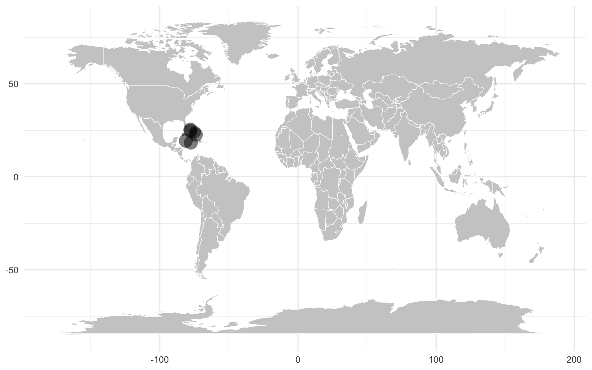

Chapter 3 Number of phylums
[1] 173.1 Geographic distribution
You can visualise the origin of your samples using the geographic information available in the sample metadata table. First you need to generate summary information containing unique sampling sites and the number of samples per site.
#Summarise for generating map
options(dplyr.summarise.inform = FALSE)
sample_table_summary <- sample_table %>%
#Group by geography and count samples
select(sample, latitude, longitude, country) %>%
group_by(latitude, longitude) %>%
summarize(count = n()) %>%
ungroup()Then, this new table can be used to generate the map with location shape sizes indicating the number of samples.
sample_table_summary %>%
ggplot(.) +
#render map
geom_map(
data=map_data("world"),
map = map_data("world"),
aes(long, lat, map_id=region),
color = "white", fill = "#cccccc", linewidth = 0.2
) +
#render points
geom_point(
aes(x=longitude,y=latitude, size=count),
alpha=0.5, shape=16) +
#add general plot layout
theme_minimal() +
theme(legend.position = "none",
axis.title.x=element_blank(),
axis.title.y=element_blank()
)
You can also plot the summary table.
| sample | sample_type | region | country | latitude | longitude |
|---|---|---|---|---|---|
| EHI00678 | Faecal | San Salvador | Bahamas | 24.05862 | -74.46739 |
| EHI00682 | Faecal | Chub Cay | Bahamas | 25.40986 | -77.87054 |
| EHI00743 | Faecal | Cockpit | Jamaica | 18.38248 | -77.51726 |
| EHI00679 | Faecal | Chub Cay | Bahamas | 25.40986 | -77.87054 |
| EHI00674 | Faecal | Cockpit | Jamaica | 18.38248 | -77.51726 |
| EHI00689 | Faecal | Andros | Bahamas | 24.66547 | -77.80168 |
| EHI00688 | Faecal | Acklins | Bahamas | 22.65397 | -73.93493 |
| EHI00690 | Faecal | Andros | Bahamas | 24.66547 | -77.80168 |
| EHI00692 | Faecal | Andros | Bahamas | 24.66547 | -77.80168 |
| EHI00753 | Faecal | Chub Cay | Bahamas | 25.40986 | -77.87054 |
| EHI00696 | Faecal | Grand Cayman | Cayman Islands | 19.32504 | -81.20698 |
| EHI00751 | Faecal | Cockpit | Jamaica | 18.38248 | -77.51726 |
| EHI00680 | Faecal | San Salvador | Bahamas | 24.05862 | -74.46739 |
| EHI00683 | Faecal | San Salvador | Bahamas | 24.05862 | -74.46739 |
| EHI00732 | Faecal | Soroa | Cuba | 22.77456 | -83.03659 |
| EHI00695 | Faecal | Grand Cayman | Cayman Islands | 19.32504 | -81.20698 |
| EHI00693 | Faecal | Andros | Bahamas | 24.66547 | -77.80168 |
| EHI00731 | Faecal | Acklins | Bahamas | 22.65397 | -73.93493 |
| EHI00675 | Faecal | Cockpit | Jamaica | 18.38248 | -77.51726 |
| EHI00686 | Faecal | Acklins | Bahamas | 22.65397 | -73.93493 |
| EHI00681 | Faecal | San Salvador | Bahamas | 24.05862 | -74.46739 |
| EHI00758 | Faecal | Soroa | Cuba | 22.77456 | -83.03659 |
| EHI00685 | Faecal | Acklins | Bahamas | 22.65397 | -73.93493 |
| EHI00752 | Faecal | Chub Cay | Bahamas | 25.40986 | -77.87054 |
| EHI00697 | Faecal | Grand Cayman | Cayman Islands | 19.32504 | -81.20698 |
| EHI00742 | Faecal | Cockpit | Jamaica | 18.38248 | -77.51726 |
| EHI00698 | Faecal | Grand Cayman | Cayman Islands | 19.32504 | -81.20698 |
| EHI00687 | Faecal | Acklins | Bahamas | 22.65397 | -73.93493 |
| EHI00684 | Faecal | Acklins | Bahamas | 22.65397 | -73.93493 |
| EHI00733 | Faecal | Soroa | Cuba | 22.77456 | -83.03659 |
| EHI00691 | Faecal | Andros | Bahamas | 24.66547 | -77.80168 |
| EHI00757 | Faecal | Chub Cay | Bahamas | 25.40986 | -77.87054 |
| EHI00699 | Faecal | Grand Cayman | Cayman Islands | 19.32504 | -81.20698 |
| EHI00677 | Faecal | San Salvador | Bahamas | 24.05862 | -74.46739 |
| EHI00700 | Faecal | Grand Cayman | Cayman Islands | 19.32504 | -81.20698 |
| EHI00730 | Faecal | Chub Cay | Bahamas | 25.40986 | -77.87054 |
| EHI00694 | Faecal | Andros | Bahamas | 24.66547 | -77.80168 |
| EHI00676 | Faecal | Cockpit | Jamaica | 18.38248 | -77.51726 |
3.2 Prepare the colour layout
For the sake of consistency through EHI projects, we have created a unified colour profile for bacterial and archaeal taxa. The palette assign similar colours to closely related phyla, and more distinct hues to distantly related phyla. The colour profile can be downloaded from Github, and store as an object in R for downstream analyses.
https://github.com/earthhologenome/EHI_taxonomy_colour/edit/main/README.md
# Download and load the phylum colour table
colours_URL="https://raw.githubusercontent.com/earthhologenome/EHI_taxonomy_colour/main/ehi_phylum_colors.tsv"
download.file(colours_URL, "data/ehi_phylum_colors.tsv")
ehi_phylum_colors <- read.table("data/ehi_phylum_colors.tsv",sep="\t",header=T,comment.char = "")
# Arrange colors alphabetically
colors_alphabetic <- ehi_phylum_colors %>%
right_join(mags_table, by=join_by(phylum == phylum)) %>%
arrange(match(genome, tree$tip.label)) %>%
select(phylum, colors) %>%
unique() %>%
arrange(phylum) %>%
select(colors) %>%
pull()